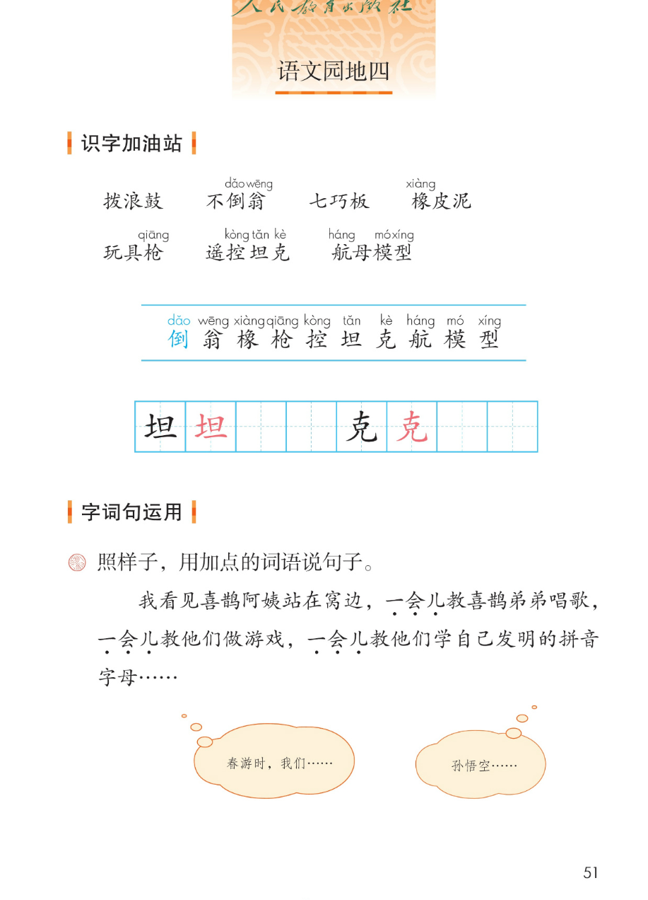
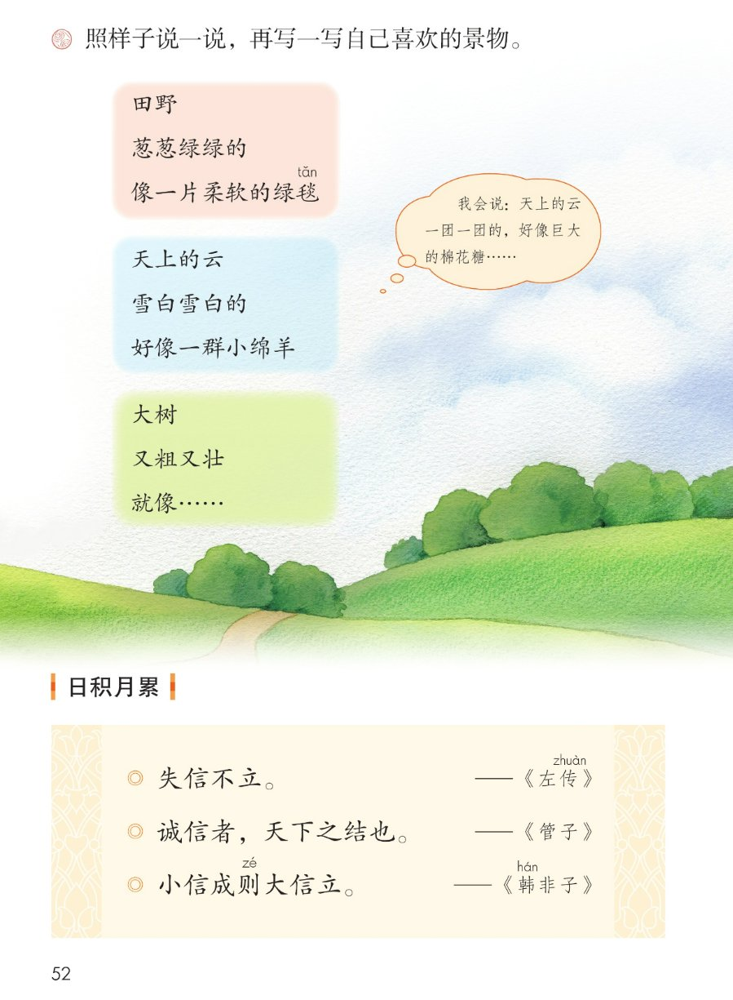
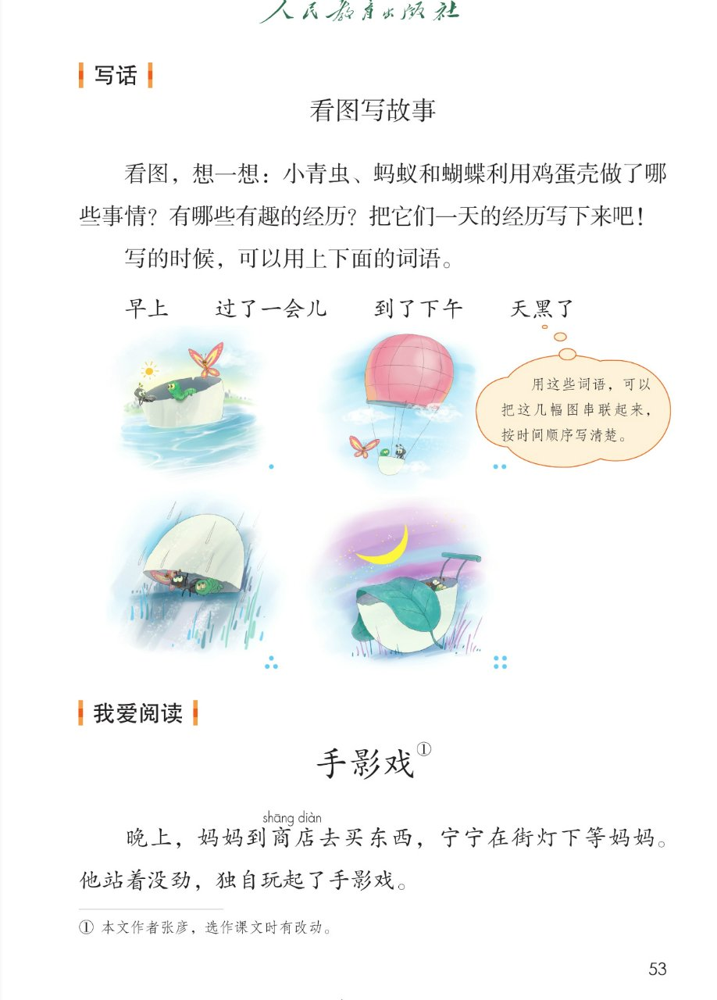
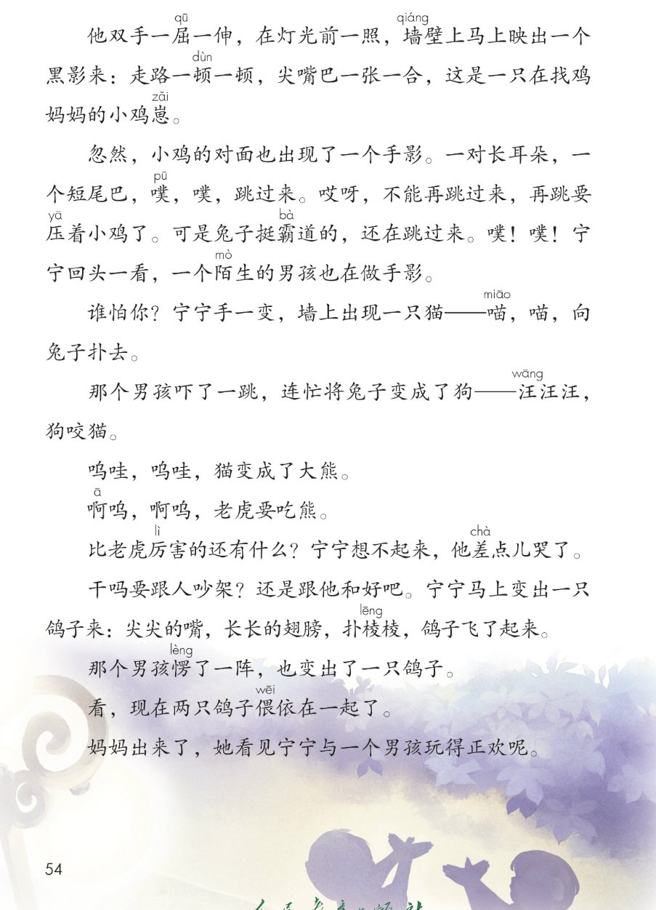

×
🔊 手机听不到声音怎么办？
① 先把手机
媒体音量调大 ，确认没开静音、没连蓝牙耳机；在微信里打开的，点右上角「⋯ → 用浏览器打开」。
② 还是没声音？到应用商店免费下载
Microsoft Edge 浏览器 （它自带朗读发声），用它打开本页面就能出声。
③ 换了 Edge 仍然没声音，说明这部手机的
硬件/系统不支持 网页朗读（多为老旧机型）；近几年买的新手机一般都能正常播放。
→ 打开声音自检
统编版 · 二年级下册 · 第四单元
第四单元 · 阅读 · 童心与想象
单元综合课件：语文园地四 · 写话 · 我爱阅读
玩具词 7 个
会认 10 字
会写 2 字
诚信名言 3 句
闯关 8 题
这个单元学了什么： 三篇课文都在讲孩子眼里的世界 ——彩色的梦、会说话的喜鹊、想象出来的马。
语文园地四把本单元用到的玩具词语、一会儿的句式、打比方的句子、诚信名言、看图写话、读故事 收一收、用一用。点一下任一卡片或句子，就能听。
课本第 51 页
点词听读音，点解释听意思
题目（课本原文）： 识字加油站 —— 读一读下面的玩具词语。
不倒dǎo 翁wēng
上轻下重，推不倒
「倒翁」dǎo wēng
遥控kòng 坦tǎn 克kè
遥控指挥前进
「控坦克」kòng tǎn kè
航háng 母模mó 型xíng
航母缩小仿制品
「航模型」háng mó xíng
📌 每张卡里的玩具说明是课件补的参考 ，课本只出词语和注音，你玩过的玩具答案不唯一 。
怎么认： 蓝色注音的那一行，是 10 个要认的字；词里带拼音的字，就是园地里新要认的字。先读整词，再把单字挑出来认。
课本第 51 页蓝色注音那一行，按课本顺序
田字格：坦 克（黑色是范字，红色是描红）
课本第 51~52 页
课本第 51 页
题目（课本原文）： 照样子，用加点的词语说句子。
例句（课本原句）： 我看见喜鹊阿姨站在窝边，一会儿 教喜鹊弟弟唱歌，一会儿 教他们做游戏，一会儿 教他们学自己发明的拼音字母……
课本气泡一（原话）： 春游时，我们……
课本气泡二（原话）： 孙悟空……
📌 两个气泡是课本给的半句话开头 ，后面由你接着说（如：春游时，我们一会儿看花，一会儿追蝴蝶）。「一会儿……一会儿……一会儿……」用来写短时间内连续做的几件事 。
课本第 52 页
题目（课本原文）： 照样子说一说，再写一写自己喜欢的景物。
大树
又粗又壮
就像……（供参考：一把绿色的大伞）
课本气泡（原话）： 我会说：天上的云一团一团的，好像巨大的棉花糖……
📌 句式是「事物 + 叠词样子 + 像什么 」。叠词（葱葱绿绿/雪白雪白/又粗又壮）写出颜色和形状，"像"把景物打比方，越具体越有意思。大树那一句课本留白，答案不唯一 ，你接着写就行。
课本第 52 页
点一句读一句
日积月累 · 诚信名言
三句话在说什么： 都讲一个字——信 。① 失信不立：不讲信用，就站不住脚。② 诚信者，天下之结也：诚实是天下人交往的纽带。③ 小信成则大信立：小的诚信做到了，大的诚信就树立起来。
📌 课本只给「则 zé 」「韩 hán 」「子 zǐ 」注了音；其余字不另加注音。出处（《左传》《管子》《韩非子》）照课本照录。
🎯 背诵闯关（三步）
🔊 三句连起来读
第一步： 跟读，一句一句跟着读。第二步： 看提示背，只看每句的第一个字。第三步： 合上书背一遍，再对照课本。
课本第 53 页
按时间顺序，把四幅图串成故事
题目（课本原文）： 看图，想一想：小青虫、蚂蚁和蝴蝶利用鸡蛋壳做了哪些事情？有哪些有趣的经历？把它们一天的经历写下来吧！
早上
过了一会儿
到了下午
天黑了
课本气泡（原话）： 用这些词语，可以把这几幅图串联起来，按时间顺序写清楚。
🥚 图1（早上）
鸡蛋壳翻过来当跷跷板 的座，小青虫和蚂蚁一上一下玩得开心，蝴蝶在旁边飞。
🎈 图2（过了一会儿）
鸡蛋壳系上气球变成热气球 ，三个小伙伴飞上天空看风景。
🌙 图4（天黑了）
鸡蛋壳当摇篮 ，一片叶子盖在上面，小伙伴在里面睡觉。
📌 四幅图的内容是课件补的描述 （供参考）。写的时候用上「早上、过了一会儿、到了下午、天黑了」这四个词，就能把一天的经历 按时间顺序讲清楚。谁先玩、发生了什么，由你连起来写。
课本第 53~54 页
点一节读一节，注音按课本随文照录
读前想一想： 宁宁和陌生男孩在街灯下玩手影 ，从「小鸡对兔子」一直变到「两只鸽子偎依在一起」。读一读：他们是怎么从对着干，变成好朋友的？
故事里两个人本来在「比谁厉害」，最后却成了朋友，转机藏在哪儿？
💡 转机在「先停手」： 宁宁不想吵架，变出鸽子 表示和好；男孩也变出鸽子。鸽子偎依在一起 ，就是不再对着干、成了朋友。
朗读小提示： 故事里有好多拟声词 ——噗噗、喵喵、汪汪、呜哇，读得短促、有节奏，就像在演一场手影戏。
词语积累（取自故事）
手影戏 ——用手在灯光前变出的影子戏霸道 ——不讲理、硬要压过别人偎依 ——紧紧靠在一起和好 ——不再吵架，重新做朋友
和本单元连起来看
第 8 课《彩色的梦》：彩色铅笔画出想象。
第 10 课《枫树上的喜鹊》：喜鹊阿姨教弟弟说话。
这篇《手影戏》：手一变就有了故事——孩子用想象交朋友。
点选项就判对错，答完自动算分
已经答 0 题，答对 0 题。
点图放大

第 51 页 · 识字加油站 · 字词句运用

第 52 页 · 说景物 · 日积月累

第 53 页 · 写话 · 我爱阅读

第 54 页 · 手影戏（全文）